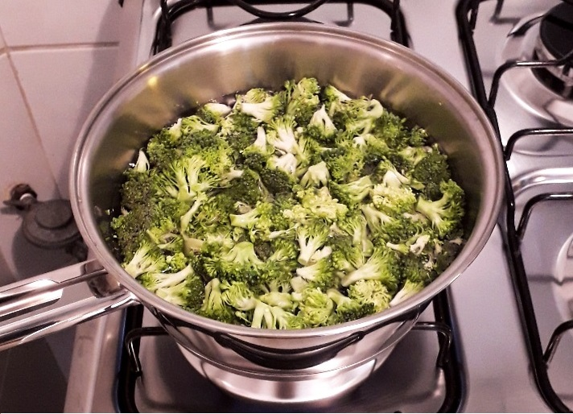

Strogonoff de brócolis
Buenas tardes, meus fiéis seguidores!! Hoje, vou mostrar uma iguaria vegetariana simples de ser feita, mas com um sabor único: strogonoff de brócolis! Estejam preparados então para desvendar os mistérios desta receita!

Ingredientes
- 1 brócolis
- 200 g de creme de leite
- 200g de ketchup (não necessariamente será utilizado toda esta quantidade)
- 200g de mostarda (não necessariamente será utilizado toda esta quantidade)
- Sal e temperos a gosto
Preparação
- Lave o brócolis e corte-o em pedaços pequenos. Não tenha frescura e coloque corte o caule do brócolis para também adicionar na receita, conforme a imagem abaixo:
 e brócolis cortado (direita)")
- Em uma panela, coloque o brócolis cortado e acrescente água até o brócolis ficar flutuando na água. Adicione uma colher de sal na água, misture com o brócolis, acenda o fogo alto do fogão e cozinhe o brócolis até ele ficar "al dente". Geralmente eu o deixo por 10 minutos mesmo que é sucesso!

- Escorra a água do brócolis, coloque-o novamente na panela, deixe-o em fogo baixo, acrescente o creme de leite e misture-o. Espere esquentar um pouco o creme de leite (vão aparecer algumas bolinhas no creme de leite, que subitamente vão se estourando - é um processo que geralmente demora 3 minutos).
- Quando as bolhinhas aparecerem, desligue o fogo e adicione o ketchup e a mostarda. Minha dica é adicionar um pouco de ketchup e mostarda na panela, misturar tudo e ir provando até o sabor ficar do seu agrado.
- Para um strogonoff mais doce, a quantidade de ketchup deve ser maior que a de mostada.
- Para um strogonoff mais salgado, a quantidade de mostarda deve ser maior que a de ketchup (é o que eu geralmente prefiro).
- Certifique-se de colocar uma quantidade mínima de ketchup e mostarda, de forma que o caldo do strogonoff não aparente o sabor do creme de leite. O sabor do creme de leite puro é horrível e tem que ser evitado.
- O strogonoff de brócolis está pronto!!! Eu queria ter tirado uma foto bonita do strogonoff com seus acompanhamentos (geralmente arroz e batata frita), mas eu e minha noiva estávamos com tanta fome que eu até esqueci de tirar essa foto hauhuahhuahua. Enfim, ele ficou uma delícia, confie em mim!!! E o melhor: foi bem fácil de ser feito!
- Fique a vontade para adicionar os temperos que quiser na comida!!! Afinal, quem é o chef é você ;)